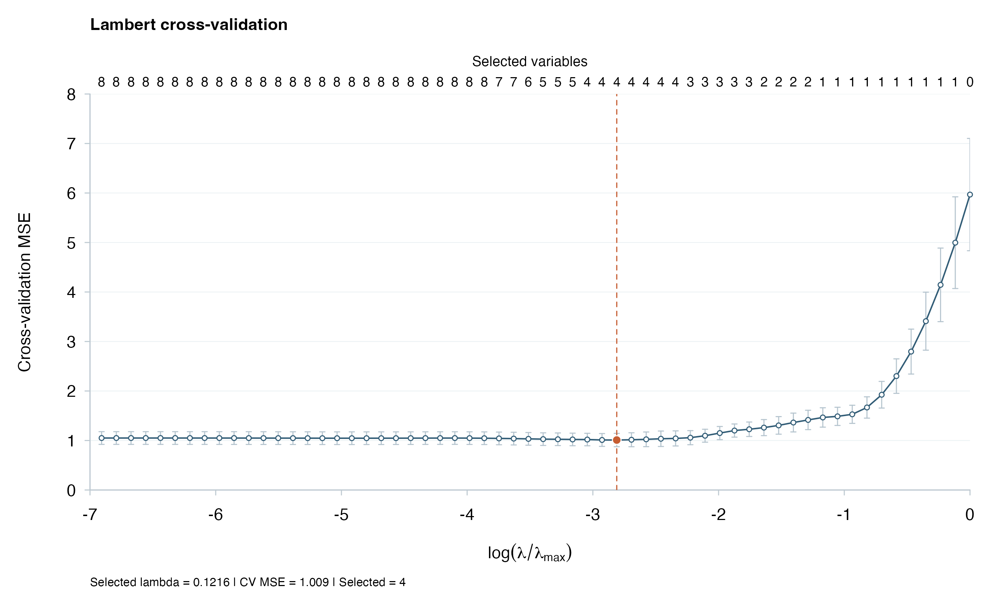
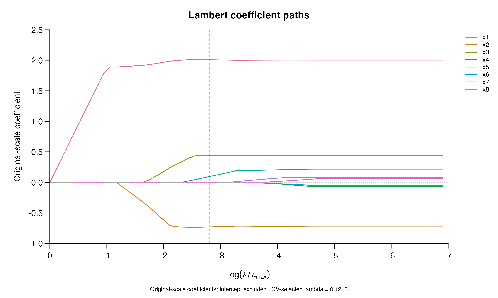
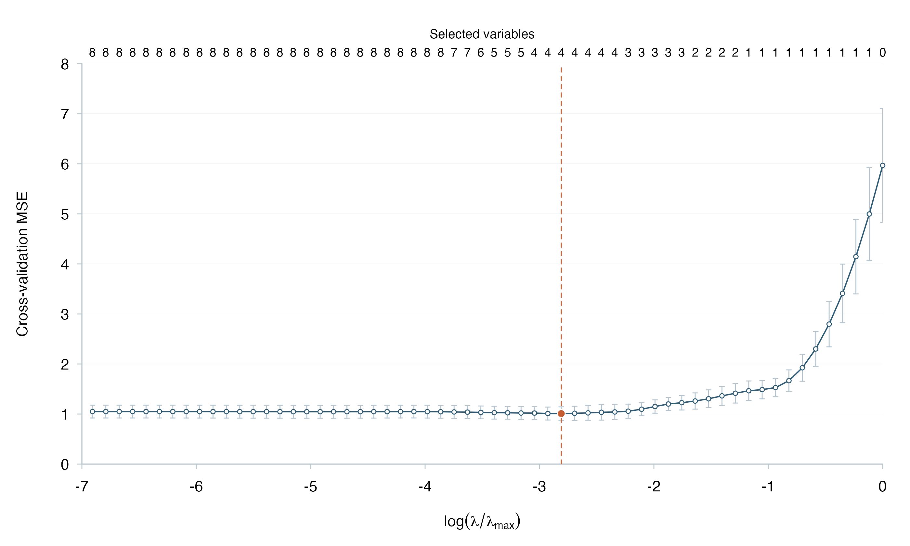

One example, three views
The plots below use the same synthetic sample as the introductory guide: 100 observations, eight independent Gaussian predictors, three nonzero coefficients, and seed 42. The first 80 observations form the training sample; the last 20 are held out. Five-fold CV selects the penalty from its default 60-fraction path. These plots illustrate the package interface and are not simulation summaries or real-data results from the manuscript.
Choose a penalty
plot(fit)
The orange marker identifies the selected penalty. Upper labels count selected variables in the full-training models, excluding the intercept. Bars show one fold-based standard error; overlapping training samples make them descriptive rather than independent-sample confidence intervals.
Follow the coefficients
plot(fit, type = "coefficients", labels = TRUE)
Each curve follows one original-scale coefficient. The intercept is excluded. The dashed line marks the CV-selected position. Changing the displayed path axis or plot style uses the stored fit and does not run another model.
Prepare a compact figure
plot(fit, style = "paper")
The compact style keeps the CV curve, error bars, and variable counts while removing the detailed title and selected-fit summary.
Inspect the example’s output
knitr::kable(demo$summary, digits = 4, row.names = FALSE,
col.names = c("Selected lambda", "Selected variables", "CV MSE", "Test RMSE", "Test MAE"))| Selected lambda | Selected variables | CV MSE | Test RMSE | Test MAE |
|---|---|---|---|---|
| 0.1216 | 4 | 1.0095 | 1.3382 | 1.0338 |
The held-out errors describe only this small demonstration. They do not compare Lambert with other estimators or establish a performance advantage.
The data and reproduction guide gives the input dictionary and the command that saves these plots, the folds, and the fit. The complete worked introduction explains the modeling steps.